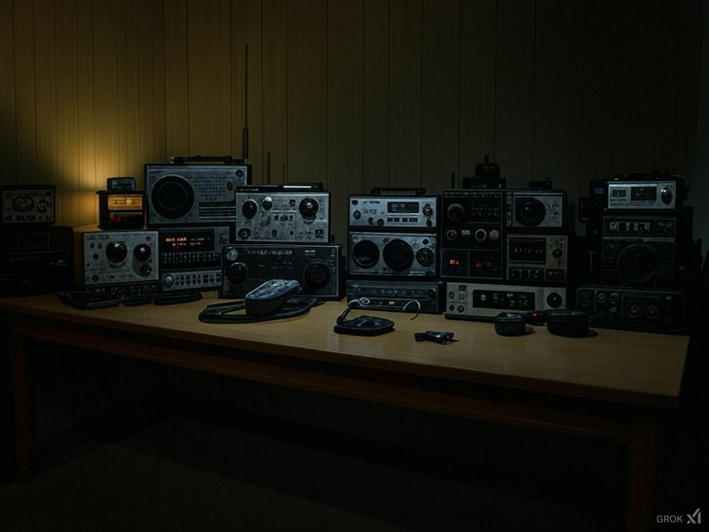
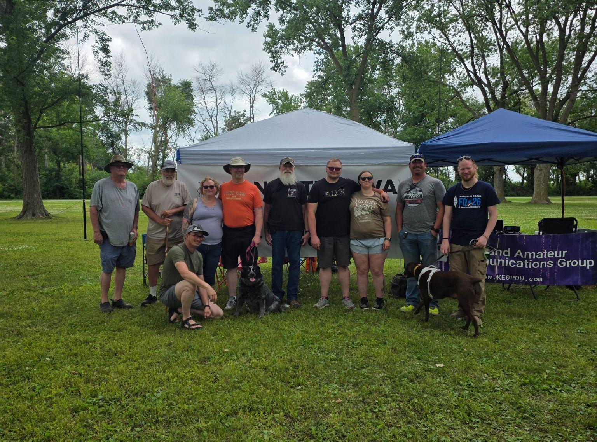

About the Club
The North Iowa Amateur Radio Club (NIARC) has been serving hams in north Iowa since October 4, 1948. We chose our club callsign W0MCW to match the Mason City Airport identifier KMCW — a fun local connection we're proud of.
We're currently rebuilding and revitalizing the club with a focus on getting on the air, learning together, and having fun with radio. All hams — new, old, or just curious — are welcome.
Bylaws (PDF)

We’re a traditional ham radio club that enjoys all aspects of the hobby:
- Educational presentations and skill-building at our monthly meetings
- Operating across modes: CW, Digital, Voice, and contesting
- Partnering with ARES and Cerro Gordo County EMA when the community needs us
- Field Day, POTA, and other fun on-air activities
- Maintaining wide-area APRS digipeaters that support the regional network
Whether you want to chase DX, learn a new mode, or just ragchew with friends, there’s a place for you here.
Meetings & Getting Involved
Monthly Meetings: 4th Tuesday of every month at 6:30 PM
Cerro Gordo County Emergency Management
2716 S Federal Ave, Mason City, IA
Informal Coffee Meetups: Most Saturday mornings around 9:00 AM at Scooter’s Coffee in Mason City. Come hang out, talk radio, and meet some of the locals.
Dues: $5/year (calendar year). Show up at a meeting or Saturday coffee and ask an officer — that’s how you join.
All hams are welcome — whether you’re brand new or have been licensed for decades. This is a place to have fun, play radio, and build friendships.
Who we are
NIARC is an active club rebuilding and growing in north Iowa. New licensees, long-time operators, and curious visitors are all welcome — come say hello and get on the air with us.

Officers & Board
- President: Jeremy KE0YDB
- Secretary: Justin N0JBE
- Treasurer: Peyton Bonjour N0THG
- Board: Julie K1JYL
- Board: Dave WA0SPF
Come say hello any time — we’re happy to help get people on the air.